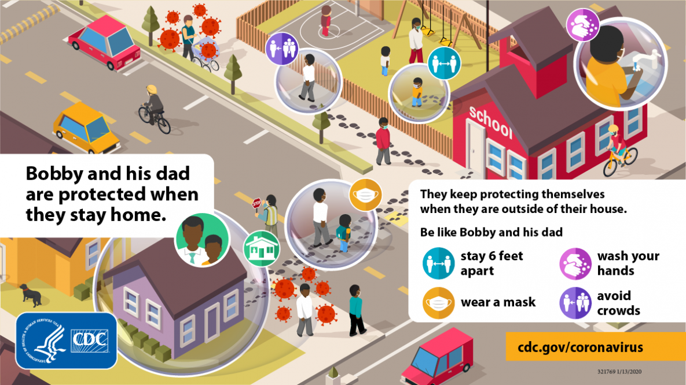

What is Corona Virus?
- Coronaviruses are a group of related RNA viruses that cause diseases in mammals and birds. In humans and birds, they cause respiratory tract infections that can range from mild to lethal.
- Mild illnesses in humans include some cases of the common cold (which is also caused by other viruses, predominantly rhinoviruses), while more lethal varieties can cause SARS, MERS, and COVID-19. In cows and pigs they cause diarrhea, while in mice they cause hepatitis and encephalomyelitis.
- Coronaviruses constitute the subfamily Orthocoronavirinae, in the family Coronaviridae, order Nidovirales, and realm Riboviria. They are enveloped viruses with a positive-sense single-stranded RNA genome and a nucleocapsid of helical symmetry. The genome size of coronaviruses ranges from approximately 26 to 32 kilobases, one of the largest among RNA viruses. They have characteristic club-shaped spikes that project from their surface, which in electron micrographs create an image reminiscent of the solar corona, from which their name derives.
- The history of coronaviruses is a reflection of the discovery of the diseases caused by coronaviruses and identification of the viruses. It starts with the first report of a new type of upper-respiratory tract disease among chickens in North Dakota, US, in 1931. The causative agent was identified as a virus in 1933. By 1936, the disease and the virus were recognised as unique from other viral disease. The became known as infectious bronchitis virus (IBV), but later officially renamed as Avian coronavirus.
The COVID-19 Pandemic
- The COVID-19 pandemic, also known as the coronavirus pandemic, is an ongoing global pandemic of coronavirus disease 2019 (COVID-19) caused by severe acute respiratory syndrome coronavirus 2 (SARS-CoV-2).
- The virus was first identified in December 2019 in Wuhan, China. The World Health Organization declared a Public Health Emergency of International Concern regarding COVID-19 on 30 January 2020, and later declared a pandemic on 11 March 2020. As of 27 April 2021, more than 148 million cases have been confirmed, with more than 3.12 million deaths attributed to COVID-19, making it one of the deadliest pandemics in history.
- Symptoms of COVID-19 are highly variable, ranging from none to life-threateningly severe. Transmission of COVID-19 occurs mainly when an infected person is in close contact with another person. Small droplets containing the virus leave an infected person as they breathe, cough, sneeze, or speak and enter another person via their mouth, nose, or eyes.
- Airborne transmission is also sometimes possible, as smaller infected droplets can linger in the air for minutes to hours within enclosed spaces that have inadequate ventilation. Less commonly, the virus may spread via contaminated surfaces. People remain contagious for up to 20 days, and can spread the virus even if they do not develop any symptoms.
Important Ways to Slow the Spread of COVID 19
- Wear a mask that covers your nose and mouth to help protect yourself and others-
- Stay 6 feet apart from others who don’t live with you.
- Get a COVID-19 vaccine when it is available to you.
- Avoid crowds and poorly ventilated indoor spaces.
- Wash your hands often with soap and water. Use hand sanitizer if soap and water aren’t available.

Tips for prevention
Follow the guidelines to help protect yourself from contracting and transmitting COVID-19
-
Wear a mask
- Everyone 2 years and older should wear masks in public.
- Masks should be worn in addition to staying at least 6 feet apart, especially around people who don’t live with you.
- If someone in your household is infected, people in the household should take precautions including wearing masks to avoid spread to others.
- Wash your hands or use hand sanitizer before putting on your mask.
- Wear your mask over your nose and mouth and secure it under your chin.
- Fit the mask snugly against the sides of your face, slipping the loops over your ears or tying the strings behind your head.
- If you have to continually adjust your mask, it doesn’t fit properly, and you might need to find a different mask type or brand.
- Make sure you can breathe easily.
- Stay 6 feet away from others
- Inside your home:
- Avoid close contact with people who are sick.
- If possible, maintain 6 feet between the person who is sick and other household members.
- Outside your home:
- Put 6 feet of distance between yourself and people who don’t live in your household.
- Remember that some people without symptoms may be able to spread virus.
- Stay at least 6 feet (about 2 arm lengths) from other people.
- Keeping distance from others is especially important for people who are at higher risk of getting very sick.
- Wash your hands often
- Wash your hands often with soap and water for at least 20 seconds especially after you have been in a public place, or after blowing your nose, coughing, or sneezing.
- It’s especially important to wash:
- Before eating or preparing food
- Before touching your face
- After using the restroom
- After leaving a public place
- After blowing your nose, coughing, or sneezing
- After handling your mask
- After caring for someone sick
- After touching animals or pets
- If soap and water are not readily available, use a hand sanitizer that contains at least 60% alcohol.
- Cover all surfaces of your hands and rub them together until they feel dry.
- Avoid touching your eyes, nose, and mouth with unwashed hands
- Cover coughs and sneezes
- If you are wearing a mask:
- You can cough or sneeze into your mask. Put on a new, clean mask as soon as possible and wash your hands.
- If you are not wearing a mask:
- Always cover your mouth and nose with a tissue when you cough or sneeze, or use the inside of your elbow and do not spit.
- Throw used tissues in the trash.
- Immediately wash your hands with soap and water for at least 20 seconds.
- If soap and water are not readily available, clean your hands with a hand sanitizer that contains at least 60% alcohol.
- Clean and disinfect
- Clean high touch surfaces daily. This includes tables, doorknobs, light switches, countertops, handles, desks, phones, keyboards, toilets, faucets, and sinks.
- If someone is sick or has tested positive for COVID-19, disinfect frequently touched surfaces. Use a household disinfectant product from EPA’s List N: Disinfectants for Coronavirus (COVID-19)external icon according to manufacturer’s labeled directions.
- If surfaces are dirty, clean them using detergent or soap and water prior to disinfection.
Variants of SARS-CoV-2
- Severe acute respiratory syndrome coronavirus 2 (SARS-CoV-2), the virus that causes coronavirus disease 2019 (COVID-19), has many variants; some are believed or have been believed to be of particular importance due to their potential for increased transmissibility, increased virulence, and reduced effectiveness of vaccines against them.
- The sequence WIV04/2019, belonging to the GISAID S clade / PANGO A lineage / Nextstrain 19B clade, is thought to most closely reflect the sequence of the original virus infecting humans known as "sequence zero", and is widely used as a reference sequence.
- A new "double mutant" variant of the coronavirus has been detected from samples collected in India.Officials are checking if the variant, where two mutations come together in the same virus, may be more infectious or less affected by vaccines.
- Some 10,787 samples from 18 Indian states also showed up 771 cases of known variants - 736 of the UK, 34 of the South African and one Brazilian. Officials say the variants are not linked to a spike in cases in India.
- The Indian SARS-CoV-2 Consortium on Genomics (INSACOG), a group of 10 national laboratories under India's health ministry, carried out genomic sequencing on the latest samples. Genomic sequencing is a testing process to map the entire genetic code of an organism - in this case, the virus. The genetic code of the virus works like its instruction manual.
- Mutations in viruses are common but most of them are insignificant and do not cause any change in its ability to transmit or cause serious infection. But some mutations, like the ones in the UK or South Africa variant lineages, can make the virus more infectious and in some cases even deadlier.
- Virologist Shahid Jameel explained that a "double mutation in key areas of the virus's spike protein may increase these risks and allow the virus to escape the immune system".
- The spike protein is the part of the virus that it uses to penetrate human cells.What are the risks of India's new Covid-19 variant Sharp rise in India Covid cases 'alarming' The government said that an analysis of the samples collected from India's western Maharashtra state showed "an increase in the fraction of samples with the E484Q and L452R mutations" compared with December last year.
- "Such [double] mutations confer immune escape and increased infectivity," the health ministry said in a statement.Dr Jameel added that "there may be a separate lineage developing in India with the L452R and E484Q mutations coming together".
At-Home Coronavirus Treatment
- If your symptoms are mild enough that you can recover at home, you should:
- Rest. It can make you feel better and may speed your recovery.
- Stay home. Don't go to work, school, or public places.
- Drink fluids. You lose more water when you're sick. Dehydration can make symptoms worse and cause other health problems.
- Monitor. If your symptoms get worse, call your doctor right away. Don't go to their office without calling first. They might tell you to stay home, or they may need to take extra steps to protect staff and other patients.
- Ask your doctor about over-the-counter medicines that may help, like acetaminophen to lower your fever.
Commonly used drugs for treatments of COVID-19
- During a public health emergency, such as COVID-19, the FDA can issue an emergency use authorization (EUA) to help make new medications and medical products more available to patients.
- Remdesivir (Veklury) - Remdesivir is an antiviral that is given by intravenous (IV) infusion in the hospital.
- Dexamethasone - Dexamethasone is a common corticosteroid (steroid) medication that has been used for many years to treat various health conditions, such as autoimmune conditions and allergic reactions.
- Convalescent Plasma - Convalescent plasma is collected from people who have recovered from COVID-19. It is then transfused into someone with an active coronavirus infection. It is thought that antibodies found in the convalescent plasma can help fight the coronavirus infection.
- Monoclonal Antibodies - Monoclonal antibodies (MABs) are antibodies made in a lab. It can take the body weeks to develop natural antibodies, so using MABs can potentially fight off infections sooner.
- Hydroxychloroquine and chloroquine - Hydroxychloroquine and chloroquine are two medications that have been used for many decades to treat malaria and autoimmune conditions like rheumatoid arthritis and lupus. A few small studies initially suggested that they may also be helpful for treating hospitalized patients with mild cases of COVID-19.
- Azithromycin - Azithromycin (informally known as a Z-pak) is an antibiotic commonly used to treat bacterial infections such as bronchitis and pneumonia. It has been shown to have some in vitro activity against viruses like influenza A and Zika.
The COVID-19 Vaccine
- A COVID‑19 vaccine is a vaccine intended to provide acquired immunity against severe acute respiratory syndrome coronavirus 2 (SARS‑CoV‑2), the virus causing coronavirus disease 2019 (COVID‑19).
- Prior to the COVID‑19 pandemic, there was an established body of knowledge about the structure and function of coronaviruses causing diseases like severe acute respiratory syndrome (SARS) and Middle East respiratory syndrome (MERS), which enabled accelerated development of various vaccine technologies during early 2020.
- On 10 January 2020, the SARS-CoV-2 genetic sequence data was shared through GISAID, and by 19 March, the global pharmaceutical industry announced a major commitment to address COVID-19.
- In Phase III trials, several COVID‑19 vaccines have demonstrated efficacy as high as 95% in preventing symptomatic COVID‑19 infections.
- As of April 2021, 13 vaccines are authorized by at least one national regulatory authority for public use:
- Two RNA vaccines :
- the Pfizer–BioNTech vaccine,
- the Moderna vaccine
- Five conventional inactivated vaccines
- BBIBP-CorV,
- CoronaVac,
- Covaxin,
- WIBP-CorV
- CoviVac
- Four viral vector vaccines
- Sputnik V
- the Oxford–AstraZeneca vaccine
- Convidecia
- the Johnson & Johnson vaccine
- Two protein subunit vaccines
- EpiVacCorona
- RBD-Dimer
- In total, as of March 2021, 308 vaccine candidates are in various stages of development, with 73 in clinical research, including 24 in Phase I trials, 33 in Phase I–II trials, and 16 in Phase III development.